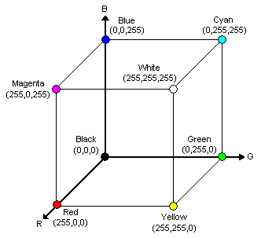

|
|||||||
| [ Home ] | [ Software ] | [ Curriculum ] | [ Hardware ] | [ Community ] | [ News ] | [ Publications ] | [ Search ] |
|
ImagesImages are stored as a collection of pixels. In a color image, each pixel consists of a red value, a green value and a blue value. Combinations of these three colors allow for all colors to be represented. In our system, the color values will range from 0 to 255. Representing the red, green and blue values as a tuple, (r, g, b), can be seen as the following cube structure:  For grayscale images, pixels are represented by a single number ranging from 0 to 255, where 0 is very black and 255 is very white. To get real images into Pyro you need a special card in your computer or robot called a frame grabber. A frame grabber is used to take analog images coming from a video camera and digitize them. Pyro can use the Video for Linux (V4L) interface, a standard and popular interface that works with many kinds of frame grabbers. Any frame grabber that uses the V4L interface can be used in Pyro. Pyro also has three other cameras in case you don't have a real camera: a simulated camera for the Stage simulator, an OpenGL-based camera for the Gazebo simulator, and a fake camera for taking a sequence of PPM images and turning them into a view that look like a live camera.
Image ProcessingProcessing an image for a robot generally falls into 3 steps. After the image is received, it goes through a series of filters. After the filters, the image is blobified. Blobifying and image is a way of grouping a set of pixels together, finding a large block of pixels that touch each other, and then producing a list of bounding boxes around the largest groups. We'll discuss blobbing later, because it is so useful. After the blobbing step, the robot can be programmed to act on the list of bounding boxes. For example, the robot can be programmed to move toward the largest blob of a specific color in an image. Blobifying is not the only method to do vision processing with a robot, but it is a very common technique.
FilteringWhen filtering, the overall image is changed. Some filters, such as blurring, make changes to all three colors in each pixel. However, in Pyro, filters that look to see if a specific color is in the image, write their results out to only one of the three color channels. For instance, if we wanted to filter an image to see if it has any pixels whose RGB values are (180,50,90) then all the pixels that have that value will get a non-zero value (usually 255) placed in one of the channels, and zeros placed in the other two channels. These type of filters have a parameter where the user can specify what channel they want the output to be placed. If the user filters for a specific color, and specifies the output "channel" as 1 (Green; 0 is Red and 2 is Blue), the image after the filter is complete, providing that specific color was found, will be displayed as green spots. These spots represent where the color being filtered for was located throughout the image.
BlobbingBlobs are areas of an image that meet a particular simple criteria. For example, a set of blobs can be constructed from a regular image based on color. The blob interface turns a possibly large image into a list of areas and locations ((x1, y1, x2, y2, area), ...). After the image has been filtered to a specific color output channel, blobbing the image is usually the final process to be done. Blobifying looks at the pixels in a channel and creates a list of coordinates where each blob is located. This information can be used to move the robot toward the largest blob, for example.
Edge DetectionAnother type of filter, called edge detection, searches for changes in intensities (high values of R, G, or B). When two pixels next to each other have very different intensities, then we probably have an "edge" or border between two objects. Edge detection can be used to find walls in corridors, detect motion, and find particular shapes. In Pyro, there are actually two image processing systems: one that is tightly integrated with Python, and an advanced one that is fairly separate from Python. We'll explore the former interface first. Next section: PyroModuleVisionSystem
Further Reading
Next: PyroModuleVisionSystem Up: PyroModuleComputerVision |
| [ Home ] | [ Software ] | [ Curriculum ] | [ Hardware ] | [ Community ] | [ News ] | [ Publications ] | [ Search ] |
 View Wiki Source | Edit Wiki Source | Mail Webmaster
View Wiki Source | Edit Wiki Source | Mail Webmaster | |||||||